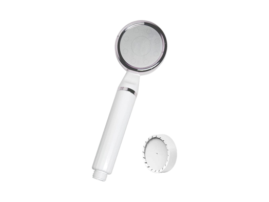

Countertop Systems
Countertop SystemsWT-CT21
RO purifier with freshly ground coffee
RO capacity: 50 / 100 / 200 GPD
SKU: WT-CT21
MOQ: Confirm on enquiry
ROPureOEM / OEM Product Studio
Start with a confirmed model. Shape the requirements for your market. Approve your sample.
62 confirmed models · Five underlying product ranges
The model workspace
Hot/Cold/Ice selects existing models with confirmed heating, cooling or ice capabilities. Functions vary by model.
A closer look
Confirmed catalogue models. Review specifications before discussing your requirements.
Countertop SystemsRO purifier with freshly ground coffee
RO capacity: 50 / 100 / 200 GPD
SKU: WT-CT21
MOQ: Confirm on enquiry
 Faucet Filters
Faucet FiltersFaucet-mounted water filter — split
Format: Split faucet filter
SKU: WT-T27
MOQ: Confirm on enquiry

Shower FiltersSlim handheld shower filter
Housing: ABS
SKU: WT-SH14
MOQ: Confirm on enquiry
 Faucet Filters
Faucet FiltersFaucet-mounted water filter — integrated
Format: Integrated faucet filter
SKU: WT-T25
MOQ: Confirm on enquiry
From model to your brand
Find a catalogue model that fits your product range.
Discuss specifications, branding, packaging and your target market.
Review the sample and agreed requirements before your bulk order.
Evidence before commitment
Tell us your model and target market. We will confirm the exact certificate list before you order. Availability, brand transfer and any re-testing are confirmed per model and order.
Review certification support →Start a conversation
Share what you are building, and the model you have in mind.
Discuss Your Project